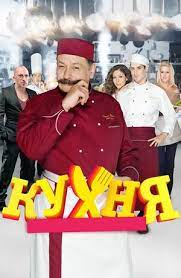

-
Описание:
Максим Лавров — повар по призванию. Его мечта — стать знаменитым шеф-поваром. Поэтому после окончания кулинарного колледжа в родном Воронеже и срочной службы в армии он отправляется покорять Москву. Ему везёт, и его принимают на работу в лучший французский ресторан Москвы, который принадлежит одной из «звёзд» шоу-бизнеса — Дмитрию Нагиеву.
-
Количество сезонов: 6
-
Страна: Россия
-
Актеры:
Дмитрий Назаров,
Марк Богатырёв,
Дмитрий Нагиев,
Елена Подкаминская,
Марина Могилевская